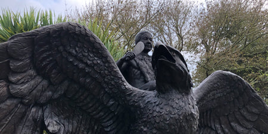

The Iwi
There is very little information about where the story of Te Maia and Hokioi-Okioi came from. There are art pieces of the pair belonging to differnt Iwi across the top of the South Island, which suggests the myth does not belong to just one Iwi.
In 2020, Gillie and Marc Public Artists created this statue (above) of Te Maia and Hokioi Okioi. The sculpture, titled 'Te Maia Kahurangi', was then gifted to the local Iwi, Ngāti Apa ki te Rā Tō, in Karamea.